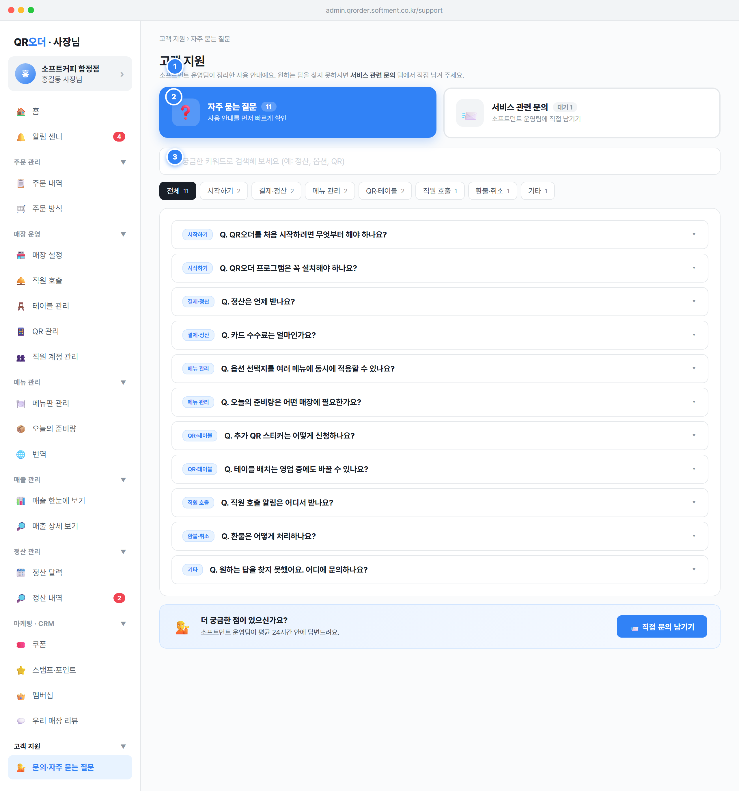

고객 지원, 메뉴 라벨 문의·자주 묻는 질문(icon 💁, ord 21), URL admin.qrorder.softment.co.kr/support. 진입 시 기본 탭은 faq.고객 지원 › {탭라벨}, 제목 고객 지원(h2), 그 아래 탭별 안내 부제(page-sub) 노출.cs 탭일 때만 + 새 문의 남기기(btn-primary) 노출, faq 탭에서는 미노출.state.supportTab 갱신 후 renderApp() 전체 리렌더.state.supportTab(기본값 'faq')에 보존되어 다른 화면 갔다 돌아와도 마지막 탭 유지. navKey에 supportTab 포함되어 탭 변경도 화면 전환으로 추적.setSection('faq') → faq 탭, setSection('cs') → cs 탭으로 매핑(둘 다 section=support). openNewInquiryWithType(type,title)는 cs 탭으로 이동 후 모달을 분류·제목 미리 채워 자동 오픈.FAQS[](운영팀 작성, 사장님 읽기 전용), CS_INQUIRIES[](사장님이 작성·운영팀이 답변).FAQS[i] = { id:int, cat:string(시작하기·결제·정산·메뉴 관리·QR·테이블·직원 호출·환불·취소·기타), q:string, a:string }.CS_INQUIRIES[i] = { id:int, date:'YYYY-MM-DD', type:string, title:string, body:string, status:'답변 대기'|'답변 완료', reply:string, replyAt:'YYYY-MM-DD HH:mm', by:string }.inquiryWait). FAQ '직접 문의' 버튼은 cs 탭으로 라우팅.GET /faqs(운영자 콘솔에서 관리, 사장님은 read-only), GET/POST /inquiries(매장 단위 scope, store_id 바인딩). 영업일·시간 표기는 SPEC §1.1(03:00 기준) 따름.state.supportTab이 비어 있으면 자동으로 'faq'로 세팅(빈 상태 없이 항상 FAQ 먼저 노출)..sup-tab).FAQS.length(예: 11, 항상 표시).setSupportTab(key) 호출 → section=support 고정, supportTab=key 설정 후 renderApp(). 활성 탭은 .on 클래스로 강조(배지도 .on 스타일).#support-body)이 renderFAQ() 또는 renderCS()로 교체. cs 활성 시 헤더에 + 새 문의 남기기 버튼 동시 노출.faq. 두 버튼은 항상 함께 노출(조건부 숨김 없음).faqCnt = FAQS.length — FAQ 배지 소스.csWait = CS_INQUIRIES.filter(c=>c.status==='답변 대기').length — CS 배지 소스.state.supportTab: 'faq' | 'cs'. 외부 라우팅 키 'faq'/'cs'는 모두 section=support로 정규화(targetSection 로직).inquiryWait KPI와 같은 계산식을 공유 → 문의 등록/답변 시 양쪽이 함께 갱신.renderFAQ). 운영팀이 작성한 사용 안내를 분류·검색·펼침으로 빠르게 찾게 함.FAQS의 cat에서 자동 추출(중복 제거).oninput마다 state.faqSearch 갱신·리렌더. 매칭은 (q+' '+a).toLowerCase().includes(검색어) 부분일치.state.faqCat 변경·리렌더, 활성 칩은 .on 강조. 카테고리+검색은 AND 결합 필터.state.faqOpen(Set, id 보관)에 토글 추가/삭제. 펼침 시 ▾ 아이콘 180° 회전, 본문 영역에 A. 답변 노출(다중 항목 동시 펼침 허용).FAQS 원본 배열 순서 그대로(id 오름차순) 표시. 기본 카테고리 전체, 기본 검색어 빈 문자열, 기본 펼침 상태 모두 닫힘.📨 직접 문의 남기기 / 📨 서비스 관련 문의 남기기 클릭 시 setSection('cs')로 CS 탭 이동.FAQS[](읽기 전용). 필터 결과 rows는 cat 필터 후 search 필터 순차 적용.state.faqCat:string(기본 '전체'), state.faqSearch:string(기본 ''), state.faqOpen:Set(펼친 항목 id).['전체', ...new Set(FAQS.map(f=>f.cat))] — 자동 생성이므로 운영팀이 신규 cat 추가 시 칩도 자동 노출.white-space:pre-wrap으로 줄바꿈 보존. 검색·카테고리는 클라이언트 필터(그린필드 API에서는 GET /faqs?cat=&q= 서버 필터로 확장 가능, SPEC §2.6 검색·정렬 표준).📨 서비스 관련 문의 남기기 버튼.toLowerCase) — 영문/한글 혼용 키워드도 매칭. 공백만 입력 시 전체 노출(빈 검색과 동일 처리).